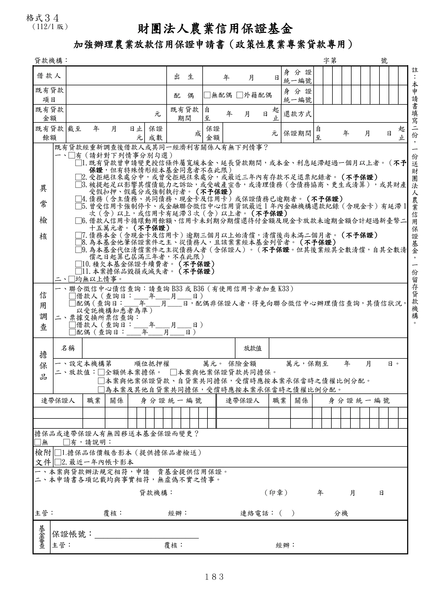

格式 34：加強辦理農業放款信用保證申請書（政策性農業專案貸款專用）
手冊頁：183 PDF頁：199／203

查看PDF文字層
下列文字取自PDF既有文字層，僅供搜尋、複製與無障礙輔助。複雜表格的欄列位置可能失真，正式內容請以原頁預覽或PDF為準。
財團法人農業信用保證基金
加強辦理農業放款信用保證申請書（政策性農業專案貸款專用）
貸款機構： 字第 號
借款人 出 生 年 月 日 身 分 證
統一編號
既有貸款
項目
配 偶 □無配偶 □外籍配偶 身 分 證
統一編號
既有貸款
金額 元 既有貸款
期間
自
至 年 月 日 起
止 還款方式
既有貸款
餘額
截至 年 月 日止
元
保證
成數 成 保證
金額 元 保證期間 自
至 年 月 日 起
止
異
常
檢
核
既有貸款經重新調查後借款人或其同一經濟利害關係人有無下列情事？
一、□有（請針對下列情事分別勾選）
□1.既有貸款曾申請變更授信條件屬寬緩本金、延長貸款期間，或本金、利息延滯超過一個月以上者。（不予
保證，但有特殊情形經本基金同意者不在此限）
□2.受拒絕往來處分中，或曾受拒絕往來處分，或最近三年內有存款不足退票紀錄者。（不予保證）
□3.被提起足以影響其償債能力之訴訟，或受破產宣告，或清理債務（含債務協商、更生或清算），或其財產
受假扣押、假處分或強制執行者。（不予保證）
□4.債務（含主債務、共同債務、現金卡及信用卡）或保證債務已逾期者。（不予保證）
□5.曾受信用卡強制停卡、或金融聯合徵信中心信用資訊最近1 年內金融機構還款紀錄（含現金卡）有延滯1
次（含）以上，或信用卡有延滯3次（含）以上者。（不予保證）
□6.借款人信用卡循環動用餘額、信用卡未到期分期償還待付金額及現金卡放款未逾期金額合計超過新臺幣二
十五萬元者。（不予保證）
□7.債務本金（含現金卡及信用卡）逾期三個月以上始清償，清償後尚未滿二個月者。（不予保證）
□8.為本基金他筆保證案件之主、從債務人，且該案業經本基金列管者。（不予保證）
□9.為本基金代位清償案件之主從債務人者（含保證人）。（不予保證。但其後業經其全數清償，自其全數清
償之日起算已屆滿三年者，不在此限）
□10.積欠本基金保證手續費者。（不予保證）
□11.本案擔保品毀損或滅失者。（不予保證）
二、□均無以上情事。
信
用
調
查
一、聯合徵信中心債信查詢：請查詢 B33或 B36（有使用信用卡者加查 K33）
□借款人（查詢日：____年____月____日）
□配偶（查詢日：____年____月____日，配偶非保證人者，得免向聯合徵信中心辦理債信查詢，其債信狀況，
以受託機構知悉者為準）
二、票據交換所票信查詢：
□借款人（查詢日：____年____月____日）
□配偶（查詢日：____年____月____日）
擔
保
品
名稱 放款值
一、設定本機構第 順位抵押權 萬元。 保險金額 萬元，保期至 年 月 日。
二、放款值：□全額供本案擔保。 □本案與他案保證貸款共同擔保。
□本案與他案保證貸款、自貸案共同擔保，受償時應按本案承保當時之債權比例分配。
□為本案及其他自貸案共同擔保，受償時應按本案承保當時之債權比例分配。
連帶保證人 職業 關係 身分證統一編號 連帶保證人 職業 關係 身分證統一編號
擔保品或連帶保證人有無因移送本基金保證而變更？
□無 □有，請說明：
檢附
文件
□1.擔保品估價報告影本（提供擔保品者檢送）
□2.最近一年內帳卡影本
一、 本案與貸款辦法規定相符，申請 貴基金提供信用保證。
二、 本申請書各項記載均與事實相符，無虛偽不實之情事。
貸款機構： （印章） 年 月 日
主管： 覆核： 經辦： 連絡電話：（ ） 分機
基
金
審
查
保證帳號：________________________
主管： 覆核： 經辦：
註
：
本
申
請
書
填
寫
二
份
，
一
份
送
財
團
法
人
農
業
信
用
保
證
基
金
，
一
份
留
存
貸
款
機
構
。
格式３４
（112/1 版）